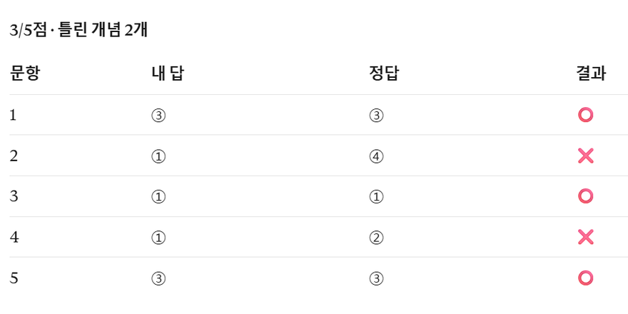
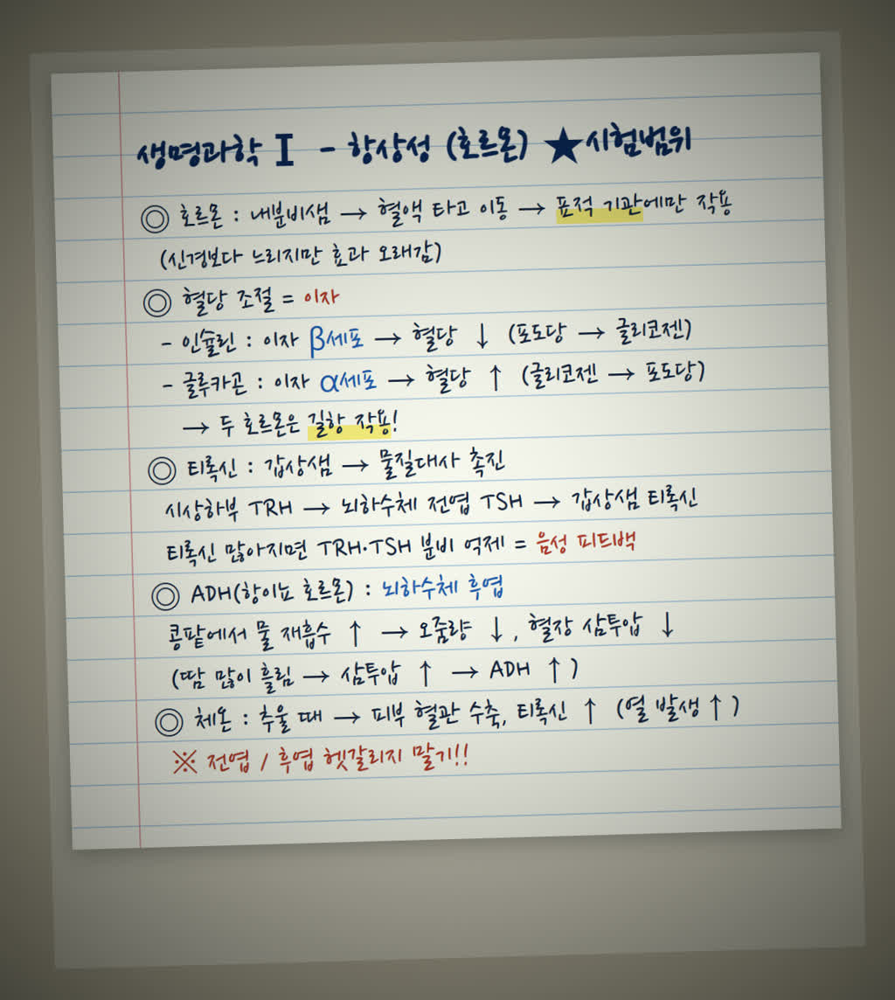
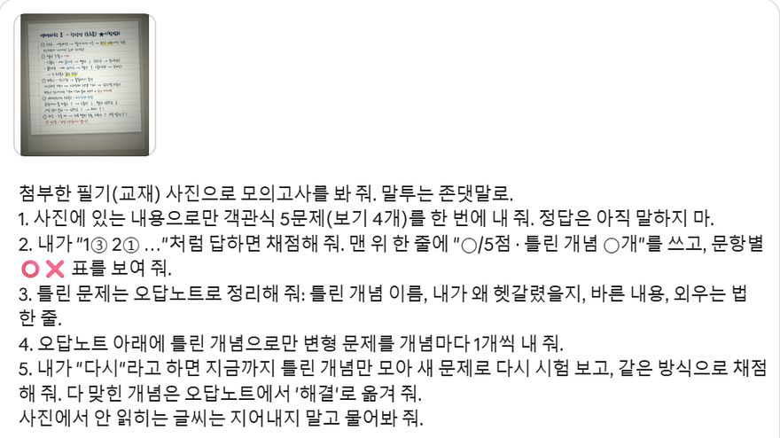
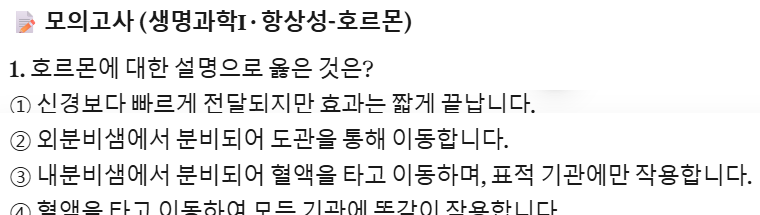
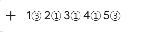
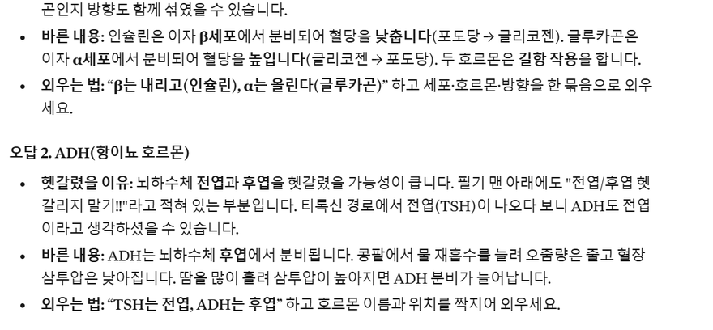
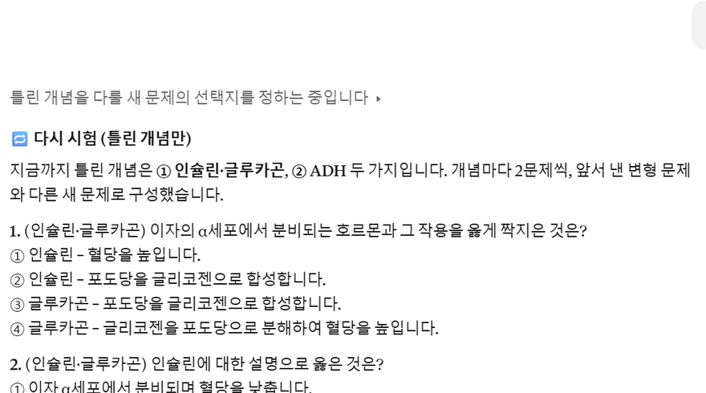
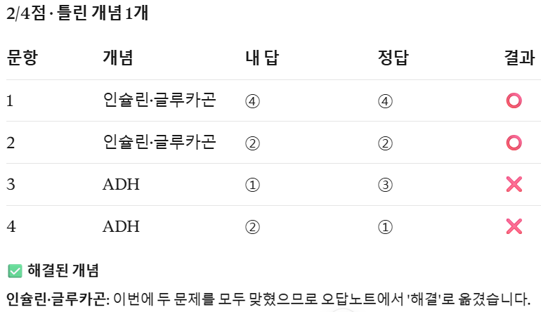
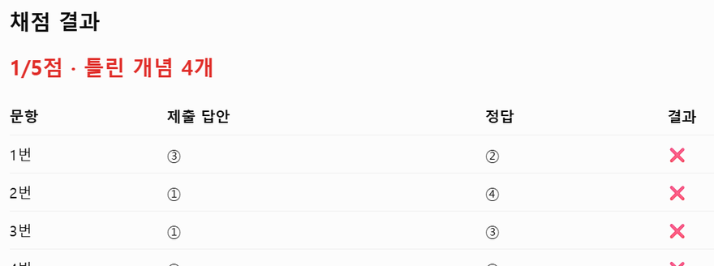

필기나 교재 사진 한 장과 아래 요청 문장 하나를 클로드(또는 챗GPT)에 넣으면, 사진에 적힌 내용으로만 객관식 5문제를 내요. 번호만 보내면 채점하고, 틀린 문제는 오답노트(헷갈린 이유·바른 내용·외우는 법)로 정리해요. '다시'라고 보내면 틀린 개념만 새 문제로 다시 시험 보고, 맞힌 개념은 '해결'로 옮겨요. 설치할 건 없어요 — 요청 문장 하나와 쓰는 법만 알면 돼요.

한 번에 1~2쪽만, 위에서 똑바로, 그림자 없이 찍어요. 글씨가 흐리면 AI가 지어내지 않고 물어보게 해 뒀어요.

새 채팅을 열고 입력칸에 사진을 넣은 뒤(클립 버튼 또는 붙여 넣기), 아래 '모의고사 요청 문장'을 붙여 넣고 보내요.

객관식 5문제가 한 번에 나와요. 정답은 아직 안 알려 줘요. 종이에 풀고 '1③ 2① 3② 4① 5①'처럼 번호만 보내요.


맨 위 한 줄이 점수와 틀린 개념 수, 그 아래 문항별 ⭕❌ 표예요. 틀린 문제마다 오답노트(틀린 개념 이름 / 왜 헷갈렸을지 / 바른 내용 / 외우는 법 한 줄)가 붙고, 그 아래 틀린 개념으로 만든 변형 문제가 개념마다 1개씩 나와요. 변형 문제도 번호로 답하면 채점해요.

'다시'라고만 보내면 지금까지 틀린 개념만 모아 새 문제로 다시 시험 봐요. 채점 뒤 다 맞힌 개념은 '✅ 해결'로 옮기고, 또 틀린 개념만 오답노트에 남아요. 한 번 더 '다시'를 보내면 남은 개념만 또 새 문제로 나와요(저희가 생명과학 필기로 두 번째 '다시'까지 실제 확인 — ADH만 남아 ADH 문제 2개). 오답노트가 빌 때까지 반복하면 돼요.


오답노트 부분을 복사해 메모장에 저장해 두세요. 다음 날 새 채팅에 아래 '다음 날 이어 하기' 문장과 저장한 오답노트를 붙여 넣으면, 그 노트에 적힌 개념만 개념마다 1문제씩 다시 내고 같은 방식으로 채점해요(저희가 생명과학 오답노트로 실제 확인).
쓰기 좋은 때: 수능·중간·기말·자격증 시험 1~2주 전 필기를 다 본 뒤, 외웠는지 확인하고 싶을 때. 같은 단원을 며칠에 걸쳐 반복할 때. 안 맞는 때: 계산 과정이 긴 수학·물리 서술형(풀이 채점은 틀릴 수 있어요), 필기에 없는 기출 유형까지 대비해야 할 때(기출 문제집을 같이 푸세요).
생명과학Ⅰ 항상성(호르몬) 필기 사진 한 장으로 돌렸어요. 호르몬의 특징, 인슐린·글루카곤, 티록신 경로, ADH, 체온 조절에서 한 문제씩 나왔고, 필기에 없는 내용은 나오지 않았어요. 문제 화면은 위 '쓰는 법 ②' 그림이에요.
'1③ 2① 3① 4① 5③'으로 일부러 두 문제를 틀렸어요. 맨 위에 '3/5점 · 틀린 개념 2개', 표에는 2번·4번 ❌. 오답노트는 두 칸이었어요 — ① 인슐린·글루카곤: 헷갈렸을 이유 'α세포와 β세포가 각각 어떤 호르몬을 분비하는지 짝이 바뀌었을 가능성', 바른 내용 '인슐린은 β세포 → 혈당을 낮춤, 글루카곤은 α세포 → 혈당을 높임', 외우는 법 'β는 내리고(인슐린), α는 올린다(글루카곤)'. ② ADH: 헷갈렸을 이유 '뇌하수체 전엽과 후엽을 헷갈림', 외우는 법 'TSH는 전엽, ADH는 후엽'. '다시' → 두 개념만 개념마다 2문제, 재시험 '2/4점 · 틀린 개념 1개'(인슐린·글루카곤 해결, ADH 남음). 화면은 위 '결과 읽는 법'·'다시 돌리기 ①' 그림이에요.
같은 문장으로 사회·문화 필기(사회 집단과 일탈)와 한국사능력검정 교재 쪽(조선 전기 왕들의 정치)도 돌려 봤어요 — 둘 다 그 쪽 내용으로만 5문제, 채점, 오답노트, '다시'까지 같은 순서로 나왔어요(클로드, 격리 실행 기록). 챗GPT 무료 계정에서는 같은 문장과 같은 사진으로 채점표('1/5점 · 틀린 개념 4개'와 ⭕❌ 표)까지 확인했어요. 오답노트·'다시'는 챗GPT에서 저희가 확인하지 못했어요.

새 채팅에서 필기 사진과 같이
첨부한 필기(교재) 사진으로 모의고사를 봐 줘. 말투는 존댓말로. 1. 사진에 있는 내용으로만 객관식 5문제(보기 4개)를 한 번에 내 줘. 정답은 아직 말하지 마. 2. 내가 "1③ 2① …"처럼 답하면 채점해 줘. 맨 위 한 줄에 "○/5점 · 틀린 개념 ○개"를 쓰고, 문항별 ⭕❌ 표를 보여 줘. 3. 틀린 문제는 오답노트로 정리해 줘: 틀린 개념 이름, 내가 왜 헷갈렸을지, 바른 내용, 외우는 법 한 줄. 4. 오답노트 아래에 틀린 개념으로만 변형 문제를 개념마다 1개씩 내 줘. 5. 내가 "다시"라고 하면 지금까지 틀린 개념만 모아 새 문제로 다시 시험 보고, 같은 방식으로 채점해 줘. 다 맞힌 개념은 오답노트에서 '해결'로 옮겨 줘. 사진에서 안 읽히는 글씨는 지어내지 말고 물어봐 줘.
문제를 다 푼 뒤
1③ 2① 3② 4① 5①
채점이 끝난 뒤, 같은 채팅에서
다시
새 채팅에서, 지난 오답노트를 붙여 넣고
지난번 모의고사 오답노트예요. 이 오답노트에 적힌 내용으로만, 개념마다 1문제씩 객관식(보기 4개)으로 다시 시험 봐 줘. 내가 "1③ 2① …"처럼 답하면 채점해서 맨 위에 "○/○점 · 틀린 개념 ○개", 문항별 ⭕❌ 표를 보여 주고, 다 맞힌 개념은 '해결'로 옮기고 남은 개념으로 오답노트를 다시 정리해 줘. 말투는 존댓말로. (여기에 지난 오답노트 붙여 넣기)
도움이 되셨다면
@ai.antenna.kr
에서 바로 쓰는 AI 활용법을 계속 올립니다.